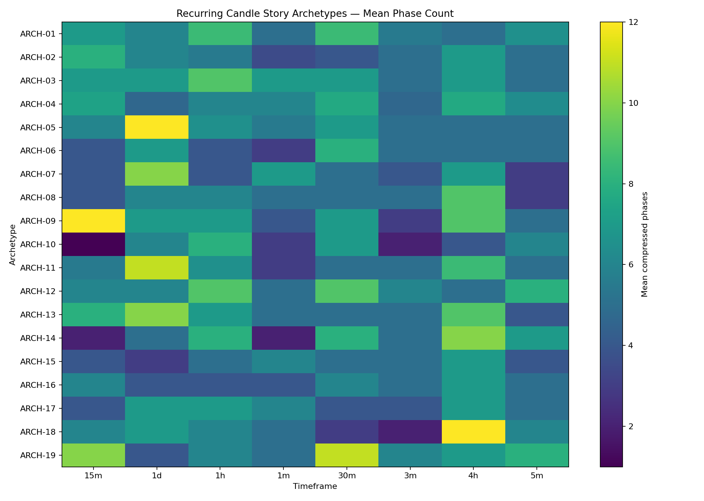

ETH Candle Behaviour Research
One place to understand the current candle structure, stories, levels, transitions and historical matches.
Loading research files…
How to read this dashboard
Start with Current to see what each timeframe is doing now. Then use Stories to read the candle sequence as a simple narrative. History shows the closest synchronized historical states. Levels & Transitions explains interaction and behaviour changes. This is descriptive research — it does not produce trade signals or forecasts.
Timeframe map
Current market behaviour
Current candle stories
Recurring story archetypes
Historical synchronized replay
Top historical states
Story similarity map

Archetype map
